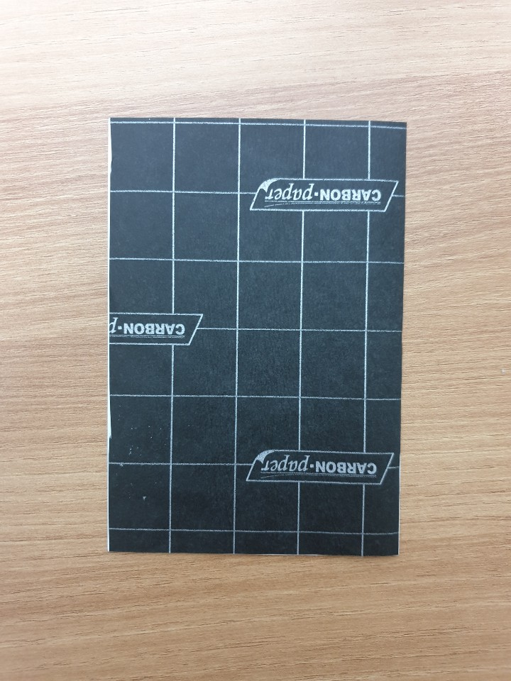
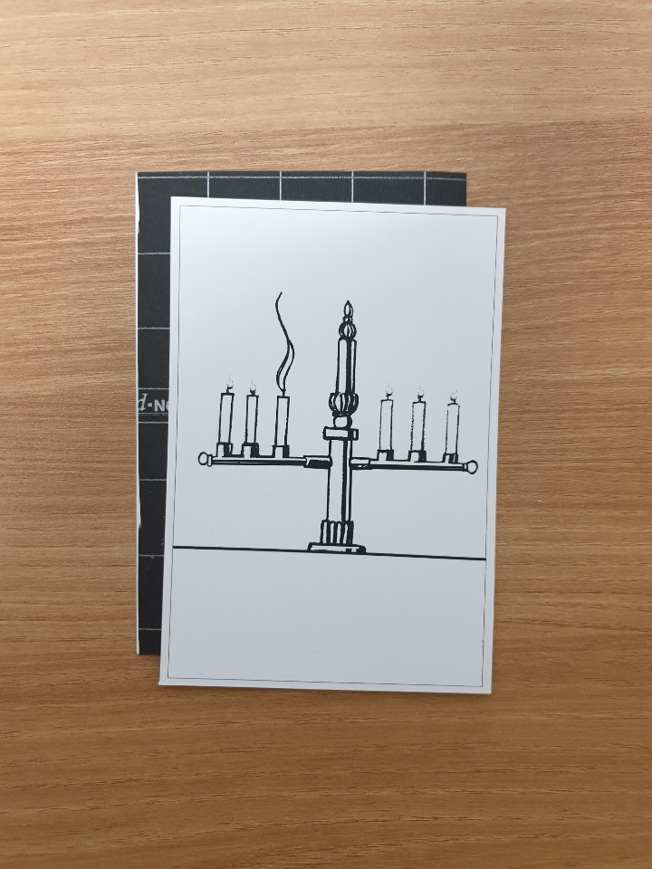
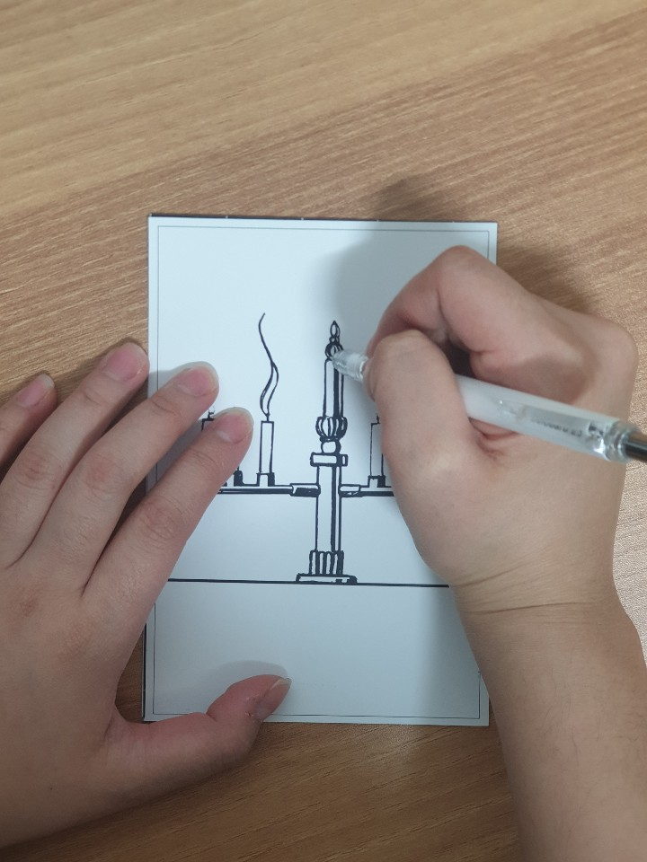
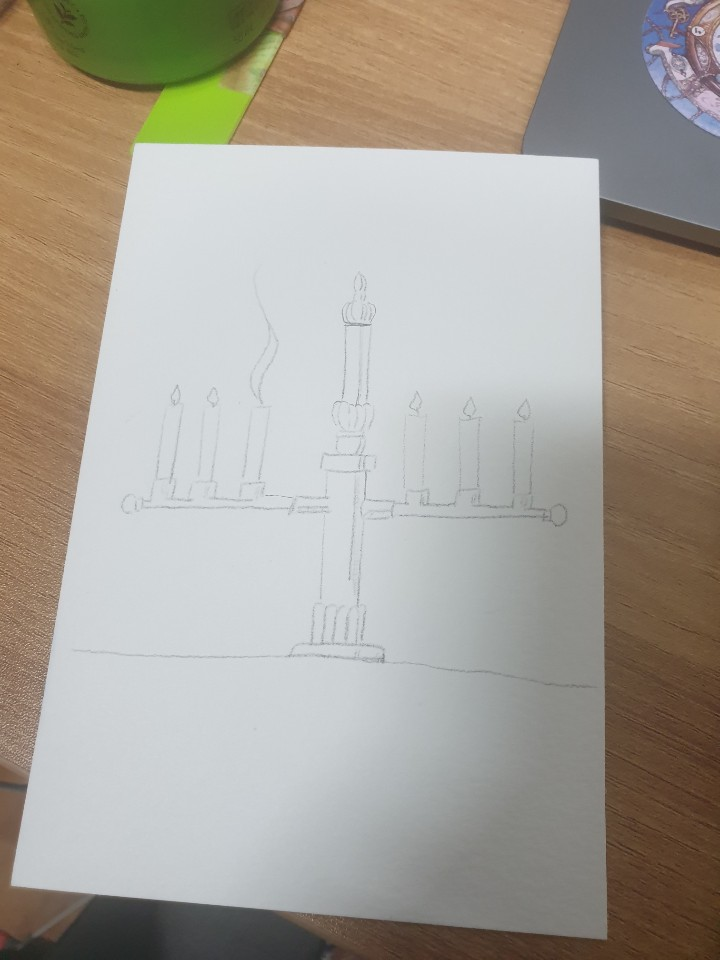
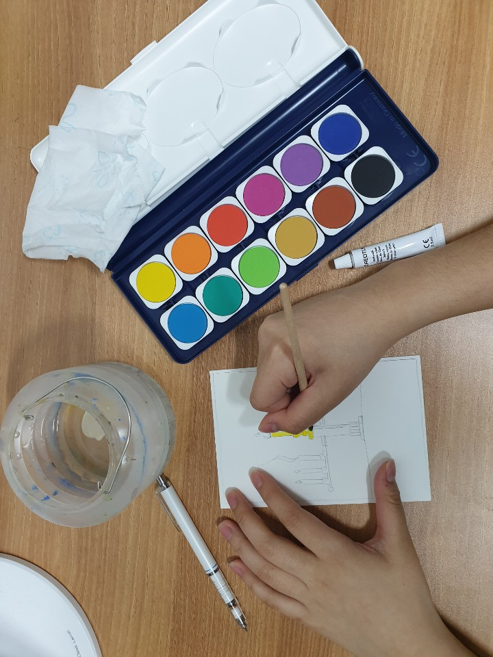
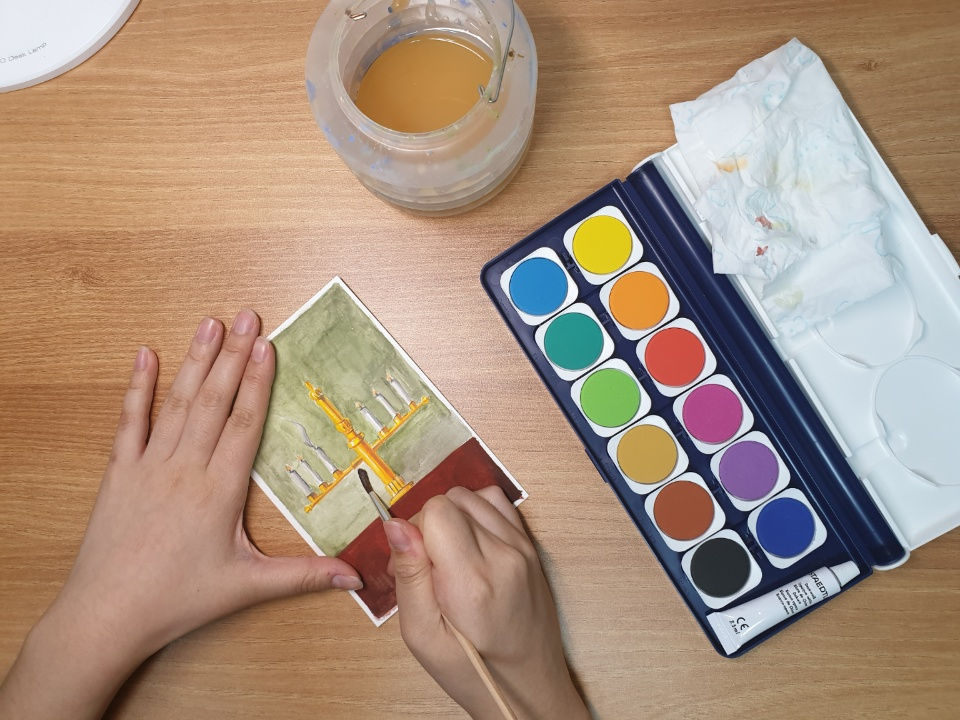
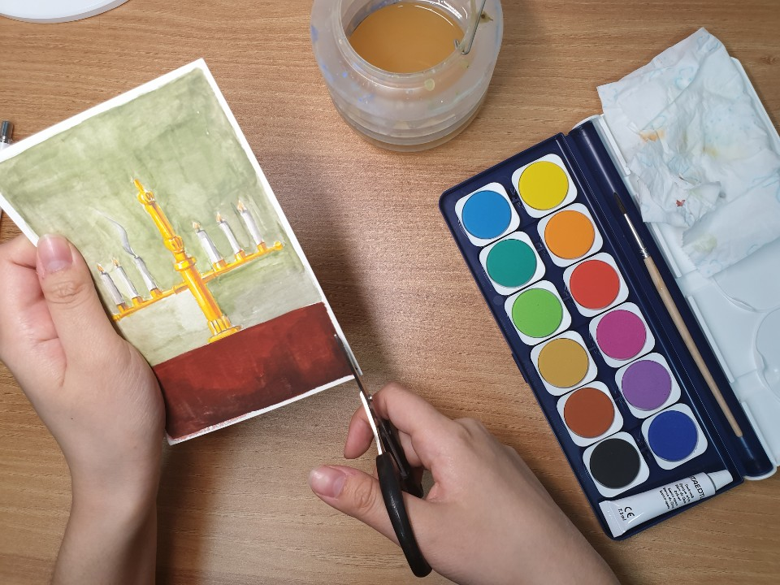
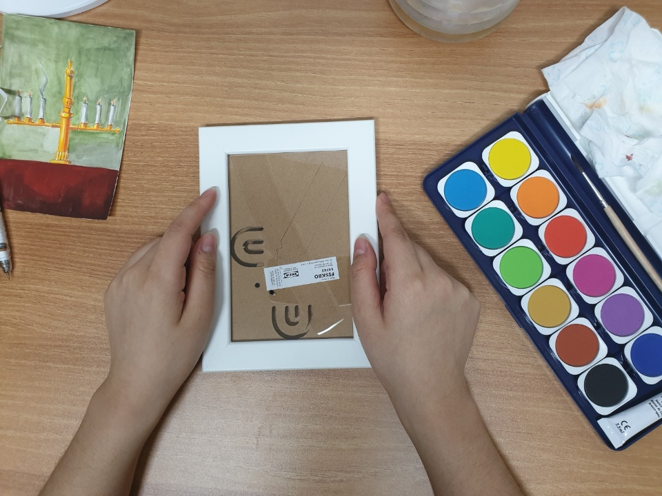
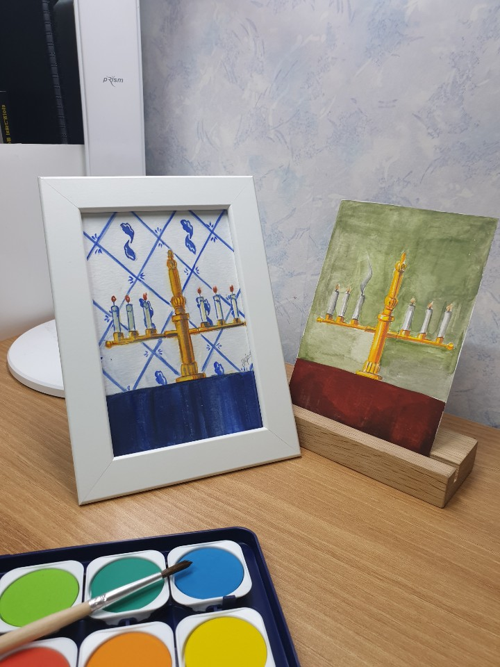

구성은 물감, 도안 3종, 액자, 캔손 수채화지, 먹지 5장, 그리고 사용 설명서 이렇게 왔어요~
일단 설명서에 써져있는 대로 따라해 봤어요.

종이 위에 이렇게 먹지를 올려두고

그 다음에 도안을 올려줘요

그 다음에는 연필이나 볼펜으로 도안을 따라 그려주기만 하면 돼요. 저는 혹시 몰라서 연필로 그려줬어요.

먹지로 그리면 이렇게 그림이 나와요. 넘 신기한것... 저는 실수로 처음에 테두리를 따라 안그렸는데 나중에 액자에 넣으려면 그려주는게 좋다고 써져있어요. 그래서 그림 그리다가 테두리 그려줬어요.

그 후에는 함께 온 물감 세트로 색칠을 해줘요.
 
색칠이 끝나면 가위로 테두리를 잘라줍니다.

그 다음에 액자 꺼내서 넣어주기만 하면 완성~~

같은 도안이여도 색칠 다르게 하면 다른 느낌이 나서 재밌는 거 같아요. 종이가 12장와서 도안 두번씩 그려봐도 넉넉합니다.
함께 온 물감도 괜찮고 무엇보다 종이 장수가 많아서 다양하게 그릴수 있게 되어있어서 좋았어요.
액자도 유리가 아니라 아크릴 제질로 되어있어서 아이들이 사용하거나 애들 있는 집에 놔둬도 큰 문제는 없어보입니다.